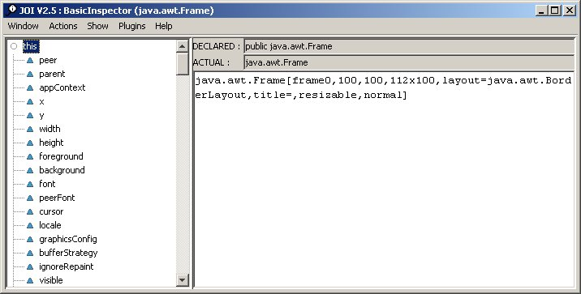
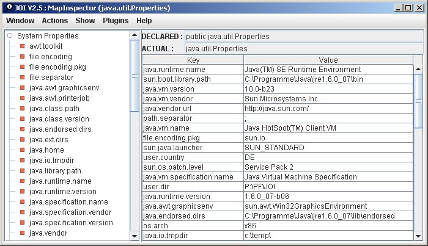

JOI - Java Object Inspector
Version : 2.5
Overview
-
The Java Object Inspector is a free debugging tool for Java programmers.
It is available under the terms and conditions of the
Common Public License (CPL) !
Many development tools have very poor support for introspection of objects
in debug mode. Very often when reaching a breakpoint in debug mode it is
necessary to find out more about the current internal state of some objects.
Most tools have some support for that, but it is often a pain to use them.
However, JOI is not an extension of the debugger or using the debugging API.
It is just available on the level of System.out.println()!
The usage of JOI is made similar to the Inspector in Smalltalk environments. I guess most Smalltalkers are really missing this little tool in Java IDEs. So JOI is here to fill that gap.
To see the latest changes goto Release Notes
-
ATTENTION:
-
JOI can only be used with JDK 1.2 and higher.
The general idea is to use the object inspctor at places in the code where you
would normally add a System.out.println( ... ) to learn more about
an object's internal state.
Using an inspector is very easy !
The only method you have to know is:
-
Inspector.inspect( Object obj ) ;
Add the archive pf-joi-full.jar to your classpath.
and put the inspect-statements
wherever you want to know more obout the current values of an object's attributes
( instance variables ).
Just give the object you are interested in to the inspect() method.
This will open a window with a tree on the left side and an information view on
the right side. In the tree is a row for the object itself ( named this )
and a row for each instance variable.
The type of the selected attribute and its value are displayed in the right info view.
Try the following example: Example1.java

All internal fields of the opened Frame are listed and can be inspected as well.
ATTENTION:
Initially, attributes declared as static ( class variables ), final ( constants )
or transient are not shown !
Only real instance variables, regardless if they are defined as public,
protected, private or default (package) are visible !
However, that can be changed in the menu 'Show'.
For a look at the MapInspector try the second example: Example2.java.
As an alternative you can also execute: java -jar pf-joi-full.jar

System properties with the specialized MapInspector and PropertiesRenderer after
a sort was applied.
In this second example you also can see a variant of the inspect() method .
-
Inspector.inspectWait( Object obj ) ;
This method opens the inspector window and stops the current thread until all inspector windows are closed. Sometimes this is necessary to avoid the change of the inspected object while it is in the inspector window. Another good reason can be seen in the example itself - the program would terminate immediately after the inspector window was opened.
For the other available public methods see the Inspector API.
XML Export
JOI can optionally be enhanced by an XML export feature. To activate it you also must include the pf-joi-xml.jar in the classpath. That adds a menu item 'Save as XML' to the 'File' menu of each inspector window. Invoking this menu item allows to store the state of the currently displayd object into an XML file.
Extensibility
Object Rendering
By default the value of an object or an attribute is shown as the result
of its toString() method. If a different, self-created string representation
of own objects is desired, the corresponding class can implement the method
inspectString() which will be used by the inspector instead of
toString() to display the objects's value.
There are two ways to do this:
- Define that the class implements the interface org.pf.joi.Inspectable. That is a public method inspectString().
- Just implement inspectString() with any visibility (default | public | protected | private ) you like.
However, the first variant makes your code dependent on JOI at compile-time, whereas the second variant will compile without having any JOI classes in the classpath!
JOI automatically finds the method utilizing the reflection API.
Another alternative is to provide an object renderer that is able to provide the string
representation for the instances of a specific class.
Let's assume the value of a java.awt.Color object should be #000000 rather than
the default java.awt.Color[r=0,g=0,b=0] from the toString() method.
Of course this class can't be extended with a inspectString() method.
So the solution is to write a class that implements org.pf.joi.ObjectRenderer
and tell JOI to use it to render all instances of java.awt.Color.
(ColorRenderer.java)
Telling JOI about an object renderer is quite simple. Just put the mapping of the classes into
a file 'META-INF/joi.renderer' and ensure that this file is in the classpath.
Here's an example of such a file:
# # Defines renderer classes for specific object classes # The key is the class name of objects that are inspected. # The value is the name or the renderer class to be used # to display these inspected objects. # java.awt.Color=org.pf.joi.test.ColorRenderer java.lang.Integer[]=org.pf.joi.test.IntegerArrayRenderer
Since V2.1 it is also possible to provide a visual component renderer in addition to
the string representation. Such a renderer must implement the interface
org.pf.joi.ObjectRenderer2. That is an extension of
org.pf.joi.ObjectRenderer which simply adds the method
public Component inspectComponent( Object obj ).
As an example the PropertiesRenderer is delivered with JOI. It will
be used automatically whenever a Properties object is inspected. Then it is rendered to a JTable
containing the key/value pairs (see Example2.java).
Specialized Inspectors
From the very beginning JOI was designed in a way that enables programmers
to extend it with more specialized inspectors. Now here's a short guide
how to do that.
JOI comes with a basic inspector ( class BasicInspector ), that shows all instance variables
of any object it was opened on. However, for debugging sometimes it is more convenient to see
a slightly different representation of an object's internals. For example Hashtable instances
are much better to understand, if we can see the keys and their associated values rather than
all the internal variables. Therefore a special inspector class named MapInspector is
registered in the JOI framework to handle all instances of classes that implement the java.util.Map
interface (e.g. java.util.Hashtable).
The following entry in 'META-INF/joi.inspector' installs that special inspector:
java.util.Map=org.pf.joi.MapInspectorOf course everybody can create and install his/her own inspectors for classes and/or interfaces. Just put the appropriate class mapping in a 'META-INF/joi.inspector' file and ensure that it will be found in the classpath. The best is to just deliver the inspector classes and their corresponding 'META-INF/joi.inspector' file together in a JAR.
Example for a inspector mapping:
com.company.business.RootObject=com.company.debug.RootObjectInspector
The key on the left is the class or interface the inspector should be used for. The value on the right is the associated inspector class wich must be a subclass of org.pf.joi.BasicInspector.
Before that really works, you have to programm the new inspector class. Here are the steps you have
to follow, using the implementation of StringInspector as example.
- Create a subclass of AbstractObjectSpy ( ==> StringSpy )
- Define the constructor that gets the object to be inspected
public StringSpy( Object obj ) throws SecurityException { super( obj ) ; } // StringSpy() - Create a method that provides a type-cast access to the inspected object
protected String getString() { return (String)this.getObject() ; } // getString() - Implement the method addAllElements()
In this method all internal elements of the inspectee must be wrapped in an ElementSpy instance and then be added to the list of element holders.
Only the elements, that are added in this method will be displayed in the inspector.protected void addAllElements() throws SecurityException { ElementSpy elementSpy = null ; Object element = null ; String str = null ; int index = 0 ; str = this.getString() ; for ( index = 0 ; index < str.length() ; index++ ) { elementSpy = new ArrayElementSpy( this, index, new Character( str.charAt( index ) ), Character.TYPE ) ; this.getElementHolders().add( elementSpy ) ; } } // addAllElements() - Create a new inspector class as subclass of BasicInspector (StringInspector)
- Add the method objectSpyFor() that returns an instance of the new spy class
with the object to inspect.
protected AbstractObjectSpy objectSpyFor( Object obj ) { return ( new StringSpy( obj ) ) ; } // objectSpyFor() - Add the method getInspectorId() that returns the public id of the inspector.
protected String getInspectorId() { return "StringInspector" ; } // getInspectorId() - Finally propagate the existence of the new inspector for the associated class
(in 'META-INF/joi.inspector'):
java.lang.String=org.pf.joi.StringInspector
However, it is always still possible to open a basic inspector on a string that shows the real fields.
Object Exporter
This plugin is a little extension to the file menu of each opened inspector. Each implemented and plugged-in object exporter creates one extra menu item that allows to export the current object to wherever the implementation puts it.So to keep an object's state persistent it is possible to write your own class that must implement org.pf.joi.ExportProvider. For details see ExportProvider Javadoc
Version 2.5
- Added special ProxyInspector for dymanic proxies.
- Added main() method to Inspector.
Version 2.4
- Custom (i.e. plugged-in) inspectors are now checked for exceptions before used. So stack-traces are avoided and the default or other matching inspector can be used instead.
- Added new standard inspector DictionaryInspector for java.util.Dictionary classes.
- Added new renderer org.pf.joi.renderer.NumberArrayRenderer for numeric arrays
- Changed detection of superclass for arrays. The array type of the element type's superclass will be detected rather than java.lang.Object. That is for example java.lang.Number[] will be detected as superclass of java.lang.Integer[].
- Is now based on pf.jar 3.6.1
Version 2.3
- If text is too large for the window to display a scrollbar now is available to allow scrooling through the whole text.
- New menu item under "Help" that shows all system properties in a new window
- New menu item under "Help" that shows the license for JOI in a new window
- New renderer for String[] added
- New properties to define intial filtering based on modifiers added
- Is now based on pf.jar 3.3.1
Version 2.2
- Enhanced classpath lookup to find Inspector, Renderer and Exporter plug-ins even if running inside Eclipse
- New option 'quote.strings' in configuration file 'joi.properties' that allows to supress that strings are enclosed in double quotes.
Version 2.1
- Features to avoid too many open inspection windows
- Open inspection on an object now is possible in a new tab of the current inspection window. (press middle mouse button)
- Open inspection on an object now is possible in the current window, replacing the current object
- A new interface ObjectRenderer2 allows to provide java.awt.Component representation of an object rather than a String representation. That allows very flexible object rendering. See Example2 and Example5 which use the new renderers PropertiesRenderer and IconRenderer.
- Added a JOI specific window icon
- With a configuration file named 'joi.properties' some behaviour of JOI can be modified to individual preferences. This file must be put at a location that is in the classpath or the current work directory.
- New option that defines whether or not the elements of an inspected object should always be sorted automatically (ascending).
- Supports editing of fields that are of type String, Integer, Long, Byte, Short, Float, Double, Boolean, Character or primitives (i.e. byte, char, short, boolean, int, long, double, float) in objects, arrays and lists (i.e. java.util.List).
- Added a new object renderer for Properties objects (i.e. PropertiesRenderer)
-
Changed internal package structure:
- moved all specialized inspectors and their spy classes to org.pf.joi.inspectors
- moved all specialized remnderer implementations to org.pf.joi.renderer
Version 2.0
- Changed packaging, due to dependencies on other Programmer's Friend libraries. See download area for detailes.
- JOI now finds plug-ins automatically in the classpath. The following files are looked up
for specification of classes that implement one of the three plug-in interfaces of JOI.
Interface/Superclass Properties file for plug-in definition BasicInspector META-INF/joi.inspector ObjectRenderer META-INF/joi.renderer ExportProvider META-INF/joi.exporter - Supports inspectors and renderers for arrays.
Example for an entry in 'META-INF/joi.renderer':java.lang.Sring[]=com.mycode.joi.StringArrayRenderer
- Removed method getName() from ExportProvider
- Removed unused classes (InspectorSecurityManager, AbstractObjectInspector, ImportExportProvider)
- Added methods to interface ExportProvider
- getVersion()
- getVendor()
- Added new submenu 'Plugins' that allows to show a list of all
- inspector mappings
- renderer mappings
- exporter mappings
- BUGFIX: ClassCastException occured when 'Inspect Key' was applied to the root object (the map itself) in MapInspector. Now the root object is just opened in a new inspector.
- The rendering of an objects string representation was extended to
checks now if the object understands the method inspectString().
If yes it will be invoked to get the display string.
The visibility (default,public,protected,private) of the method doesn't matter!
So the sequence for the rendering now is:
- Is instanceof Inspectable -> obj.incspectString()
- Has registered renderer -> renderer.inspectString(obj)
- Try to invoke by reflection -> obj.inspectString()
- Standard string conversion -> obj.toString()
Version 1.6
- Changed packages to be part of Programmer's Friend (org.pf.joi.*)
Version 1.5
- The internal state of an object now can be retrieved without automatically launching an inspector window.
Use Inspector.getObjectSpy( anyObject ) for that. - Show visibility (public | protected | private | package) of variables with colored icons
- Switches to select display of static, final, transient, public, protected, private and default (package)
- Removed depricated class AbstractInspector
Version 1.4
- Naming of inspected objects
- Export an inspected object as XML to a file
- Write an object's internal state as XML to stdout or another stream
- New facade JOI that automatically integrates XML features
Version 1.3
- Elements of an object can be sorted in ascending order of their names ( Menu: Action/Sort )
- Keys in map inspectors are now using inspectString() for their representation if available
- All Inspector windows are opened centered on the screen
- The methods inspectWait() and basicInspectWait() are giving more time to other threads now
- From a "waiting" inspector the current process can now be continued without closing all inspectors ( Menu: Action/Continue Thread )
Version 1.2
- Special inspector for strings, that displays their contents as array of characters
- Character and char are shown with their integer value in decimal and hex
- Created interface ObjectRenderer and Spy.registerRenderer() to support class-individual string representation
- Documentation about how to extend JOI with additional inspectors
- New methods Inspector.inspectWait() and Inspector.basicInspectWait() which stop execution until all inspectors are closed.
Version 1.1
- Changed invocation class from AbstractInspector to Inspector
- Function to close all open inspectors at once
- Each inspector runs now in its own thread
- Support of self-defined specialized inspectors for specific classes or interfaces
- Special inspector for classes implementing the java.util.List interface -> ListInspector
- Special inspector for classes implementing the java.util.Map interface -> MapInspector
- Distinguish between "Inspect" and "Basic Inspect"
- Double click on left mouse button opens inspector for the clicked element
Version 1.0
- Inspector window on objects and primitive types ( int, boolean, ... )
- Supporting arrays
- Opening new window on an attribute's value
- Distinction between declared type and actual type
- Support of self-defined string representation of an object ( inspectString() )
Future Features
Here is a list of things that might be supported in a future version:
- Integration into a debugger environment
- Special inspector(s) for Service Data Objects (SDO)
Feedback
-
Comments, bug reports and suggestions are welcome !
Just send me an e-mail: Feedback